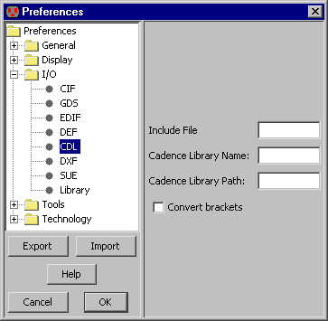

<!-- NEED 5in -->

<!-- HEADER 7-3-6: CDL Control -->

<!-- PREFERENCE I/O/CDL -->

<TABLE><TR><TD>
CDL (Circuit Description Language) is almost identical to Spice format,
and is used as a netlist interchange method.
CDL options are controlled with the CDL Preferences
(in menu <B>File / Preferences...</B>, "I/O" section, "CDL" tab).
<P>
This dialog controls the library name and path information that is written when generating a netlist.
You can specify an Include file which will be inserted at the top of the netlist.
Also, you can choose to convert square-bracket characters (if your CDL cannot handle indexed signal names).
</TD><TD><CENTER></CENTER></TD></TR></TABLE>

<!-- TRAILER -->
